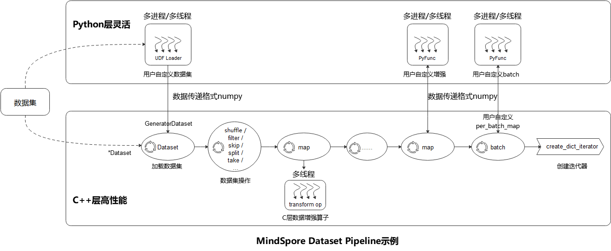

mindspore.dataset¶
该模块提供了加载和处理各种通用数据集的API，如MNIST、CIFAR-10、CIFAR-100、VOC、COCO、ImageNet、CelebA、CLUE等， 也支持加载业界标准格式的数据集，包括MindRecord、TFRecord、Manifest等。此外，用户还可以使用此模块定义和加载自己的数据集。
该模块还提供了在加载时进行数据采样的API，如SequentialSample、RandomSampler、DistributedSampler等。
大多数数据集可以通过指定参数 cache 启用缓存服务，以提升整体数据处理效率。 请注意Windows平台上还不支持缓存服务，因此在Windows上加载和处理数据时，请勿使用。更多介绍和限制， 请参考 Single-Node Tensor Cache。
在API示例中，常用的模块导入方法如下：
import mindspore.dataset as ds
import mindspore.dataset.transforms as transforms
import mindspore.dataset.vision as vision
常用数据集术语说明如下：
Dataset，所有数据集的基类，提供了数据处理方法来帮助预处理数据。
SourceDataset，一个抽象类，表示数据集管道的来源，从文件和数据库等数据源生成数据。
MappableDataset，一个抽象类，表示支持随机访问的源数据集。
Iterator，用于枚举元素的数据集迭代器的基类。
数据处理Pipeline介绍¶
如上图所示，MindSpore Dataset模块使得用户很简便地定义数据预处理Pipeline，并以最高效（多进程/多线程）的方式处理 数据集中样本，具体的步骤参考如下：
加载数据集（Dataset）：用户可以方便地使用 *Dataset 类来加载已支持的数据集，或者通过 UDF Loader + GeneratorDataset 实现Python层自定义数据集的加载，同时加载类方法可以使用多种Sampler、数据分片、数据shuffle等功能；
数据集操作（filter/ skip）：用户通过数据集对象方法 .shuffle / .filter / .skip / .split / .take / … 来实现数据集的进一步混洗、过滤、跳过、最多获取条数等操作；
数据集样本增强操作（map）：用户可以将数据增强算子 （vision类， nlp类， audio类） 添加到map操作来执行，数据预处理过程中可以定义多个map操作，用于执行不同增强操作，数据增强算子也可以是 用户自定义增强的 PyFunc；
批（batch）：用户在样本完成增强后，使用 .batch 操作将多个样本组织成batch，也可以通过batch的参数 per_batch_map 来自定义batch逻辑；
迭代器（create_dict_iterator）：最后用户通过数据集对象方法 create_dict_iterator 来创建迭代器， 可以将预处理完成的数据循环输出。
数据处理Pipeline示例如下，完整示例请参考 datasets_example.py：
import numpy as np
import mindspore as ms
import mindspore.dataset as ds
import mindspore.dataset.vision as vision
import mindspore.dataset.transforms as transforms
# 构造图像和标签
data1 = np.array(np.random.sample(size=(300, 300, 3)) * 255, dtype=np.uint8)
data2 = np.array(np.random.sample(size=(300, 300, 3)) * 255, dtype=np.uint8)
data3 = np.array(np.random.sample(size=(300, 300, 3)) * 255, dtype=np.uint8)
data4 = np.array(np.random.sample(size=(300, 300, 3)) * 255, dtype=np.uint8)
label = [1, 2, 3, 4]
# 加载数据集
dataset = ds.NumpySlicesDataset(([data1, data2, data3, data4], label), ["data", "label"])
# 对data数据增强
dataset = dataset.map(operations=vision.RandomCrop(size=(250, 250)), input_columns="data")
dataset = dataset.map(operations=vision.Resize(size=(224, 224)), input_columns="data")
dataset = dataset.map(operations=vision.Normalize(mean=[0.485 * 255, 0.456 * 255, 0.406 * 255],
std=[0.229 * 255, 0.224 * 255, 0.225 * 255]),
input_columns="data")
dataset = dataset.map(operations=vision.HWC2CHW(), input_columns="data")
# 对label变换类型
dataset = dataset.map(operations=transforms.TypeCast(ms.int32), input_columns="label")
# batch操作
dataset = dataset.batch(batch_size=2)
# 创建迭代器
epochs = 2
ds_iter = dataset.create_dict_iterator(output_numpy=True, num_epochs=epochs)
for _ in range(epochs):
for item in ds_iter:
print("item: {}".format(item), flush=True)
视觉¶
读取和解析Caltech101数据集的源文件构建数据集。 |
|
读取和解析Caltech256数据集的源文件构建数据集。 |
|
读取和解析CelebA数据集的源文件构建数据集。 |
|
读取和解析CIFAR-10数据集的源文件构建数据集。 |
|
读取和解析CIFAR-100数据集的源文件构建数据集。 |
|
读取和解析Cityscapes数据集的源文件构建数据集。 |
|
读取和解析COCO数据集的源文件构建数据集。 |
|
读取和解析DIV2K数据集的源文件构建数据集。 |
|
A source dataset that reads and parses the EMNIST dataset. |
|
A source dataset for generating fake images. |
|
A source dataset that reads and parses the FASHION-MNIST dataset. |
|
A source dataset that reads and parses Flickr8k and Flickr30k dataset. |
|
A source dataset that reads and parses Flowers102 dataset. |
|
从树状结构的文件目录中读取图片构建源数据集，同一个文件夹中的所有图片将被分配相同的label。 |
|
A source dataset that reads and parses the KMNIST dataset. |
|
读取和解析Manifest数据文件构建数据集。 |
|
读取和解析MNIST数据集的源文件构建数据集。 |
|
A source dataset that reads and parses the PhotoTour dataset. |
|
A source dataset that reads and parses the Places365 dataset. |
|
A source dataset that reads and parses the QMNIST dataset. |
|
A source dataset that reads and parses Semantic Boundaries Dataset. |
|
A source dataset that reads and parses the SBU dataset. |
|
A source dataset that reads and parses Semeion dataset. |
|
A source dataset that reads and parses STL10 dataset. |
|
A source dataset that reads and parses SVHN dataset. |
|
A source dataset that reads and parses the USPS dataset. |
|
读取和解析VOC数据集的源文件构建数据集。 |
|
A source dataset that reads and parses WIDERFace dataset. |
文本¶
A source dataset that reads and parses AG News datasets. |
|
A source dataset that reads and parses Amazon Review Polarity and Amazon Review Full datasets. |
|
读取和解析CLUE数据集的源文件构建数据集。 |
|
A source dataset that reads and parses CoNLL2000 chunking dataset. |
|
A source dataset that reads and parses the DBpedia dataset. |
|
A source dataset that reads and parses EnWik9 dataset. |
|
A source dataset that reads and parses Internet Movie Database (IMDb). |
|
A source dataset that reads and parses IWSLT2016 datasets. |
|
A source dataset that reads and parses IWSLT2017 datasets. |
|
A source dataset that reads and parses PennTreebank datasets. |
|
A source dataset that reads and parses Sogou News dataset. |
|
读取和解析文本文件构建数据集。 |
|
A source dataset that reads and parses UDPOS dataset. |
|
A source dataset that reads and parses WikiText2 and WikiText103 datasets. |
|
A source dataset that reads and parses the YahooAnswers dataset. |
|
A source dataset that reads and parses Yelp Review Polarity and Yelp Review Full dataset. |
音频¶
A source dataset that reads and parses LJSpeech dataset. |
|
A source dataset that reads and parses the SpeechCommands dataset. |
|
A source dataset that reads and parses Tedlium dataset. |
|
A source dataset that reads and parses the YesNo dataset. |
标准格式¶
读取和解析CSV数据文件构建数据集。 |
|
读取和解析MindRecord数据文件构建数据集。 |
|
读取和解析存放在华为云OBS、Minio以及AWS S3等云存储上的MindRecord格式数据集。 |
|
读取和解析TFData格式的数据文件构建数据集。 |
用户自定义¶
自定义Python数据源，通过迭代该数据源构造数据集。 |
|
由Python数据构建数据集。 |
|
由用户提供的填充数据构建数据集。 |
|
A source dataset that generates random data. |
图¶
加载argoverse数据集并进行图（Graph）初始化。 |
|
主要用于存储图的结构信息和图特征属性，并提供图采样等能力。 |
|
从共享文件或数据库中读取用于GNN训练的图数据集。 |
|
用于将图数据加载到内存中的Dataset基类。 |
采样器¶
分布式采样器，将数据集进行分片用于分布式训练。 |
|
为数据集中每P个类别各采样K个样本。 |
|
随机采样器。 |
|
按数据集的读取顺序采样数据集样本，相当于不使用采样器。 |
|
给定样本的索引序列，从序列中随机获取索引对数据集进行采样。 |
|
给定样本的索引序列，对数据集采样指定索引的样本。 |
|
给定样本的权重列表，根据权重决定样本的采样概率，随机采样[0，len(weights) - 1]中的样本。 |
其他¶
此类提供了两种方法获取数据集的批处理数量（batch size）和迭代数（epoch）属性。 |
|
创建数据缓存客户端实例。 |
|
数据处理回调类的抽象基类，用户可以基于此类实现自己的回调操作。 |
|
指定图数据采样策略的枚举类。 |
|
用于解析和存储数据列属性的类。 |
|
指定混洗模式的枚举类。 |
|
阻塞式数据处理回调类的抽象基类，用于与训练回调类 mindspore.Callback 的同步。 |
|
通过API get_all_neighbors 获取所有相邻节点时，指定节点的存储格式。 |
|
比较两个数据处理管道是否相同。 |
|
数据处理管道反序列化，支持输入Python字典或使用 mindspore.dataset.serialize() 接口生成的JSON文件。 |
|
将数据处理管道序列化成JSON文件。 |
|
将数据处理管道图写入MindSpore的INFO级别日志文件。 |
|
等待所有的卡需要的数据集文件下载完成。 |
|
使用给定的边界框和类别置信度绘制图像。 |
|
将多个dataset对象按列进行合并压缩。 |